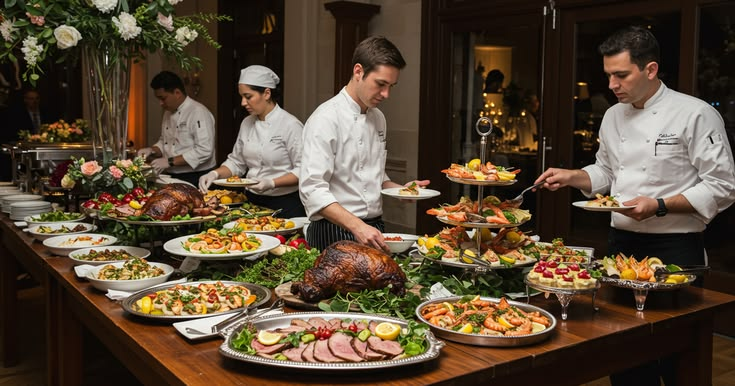
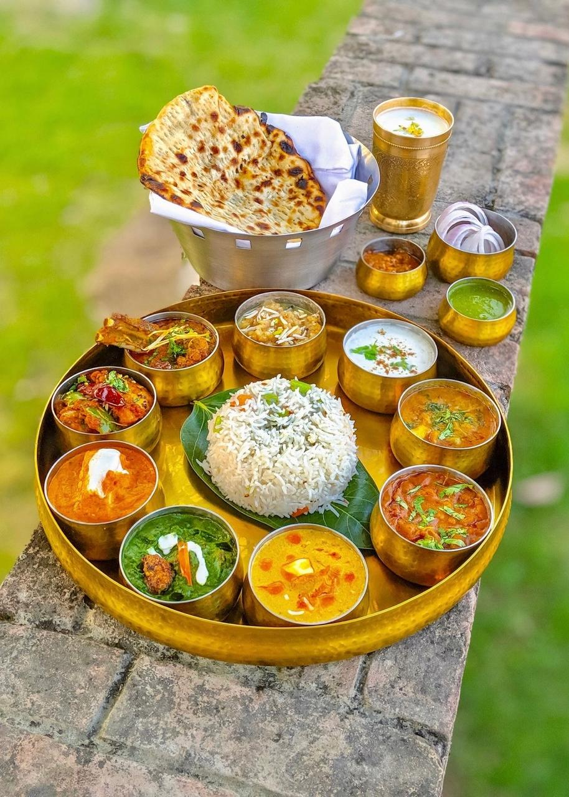
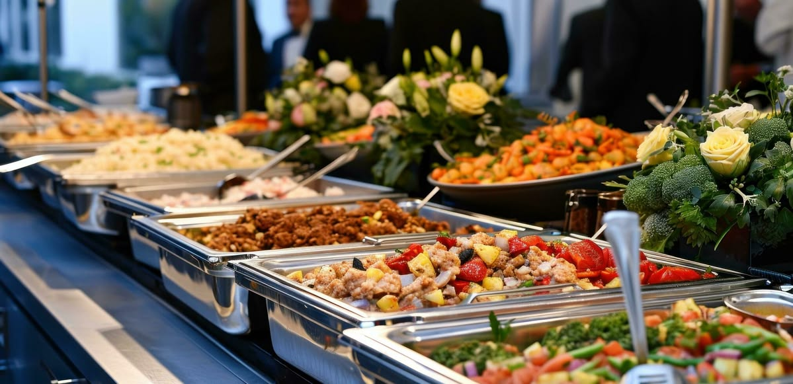
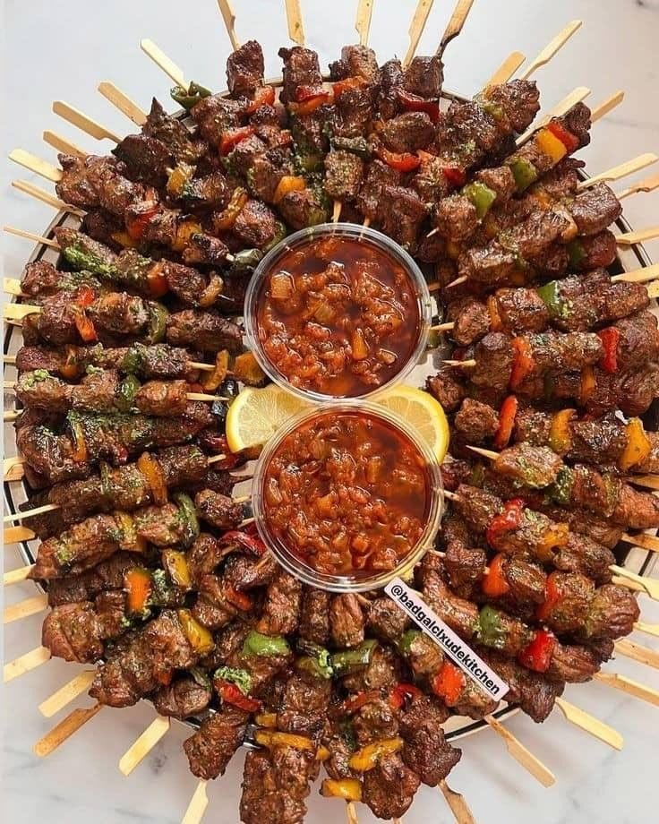
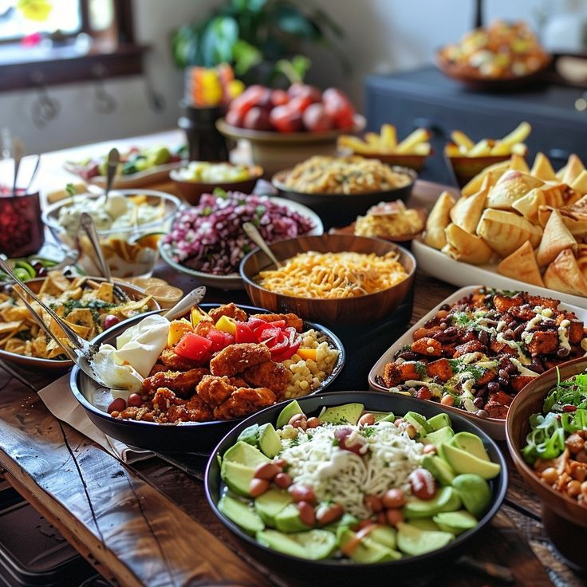
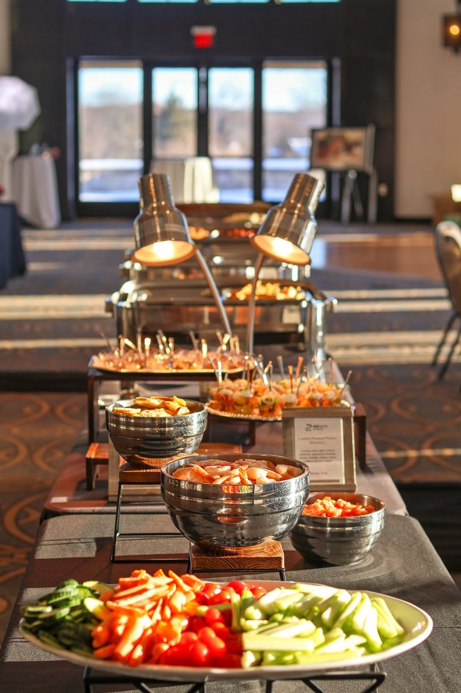
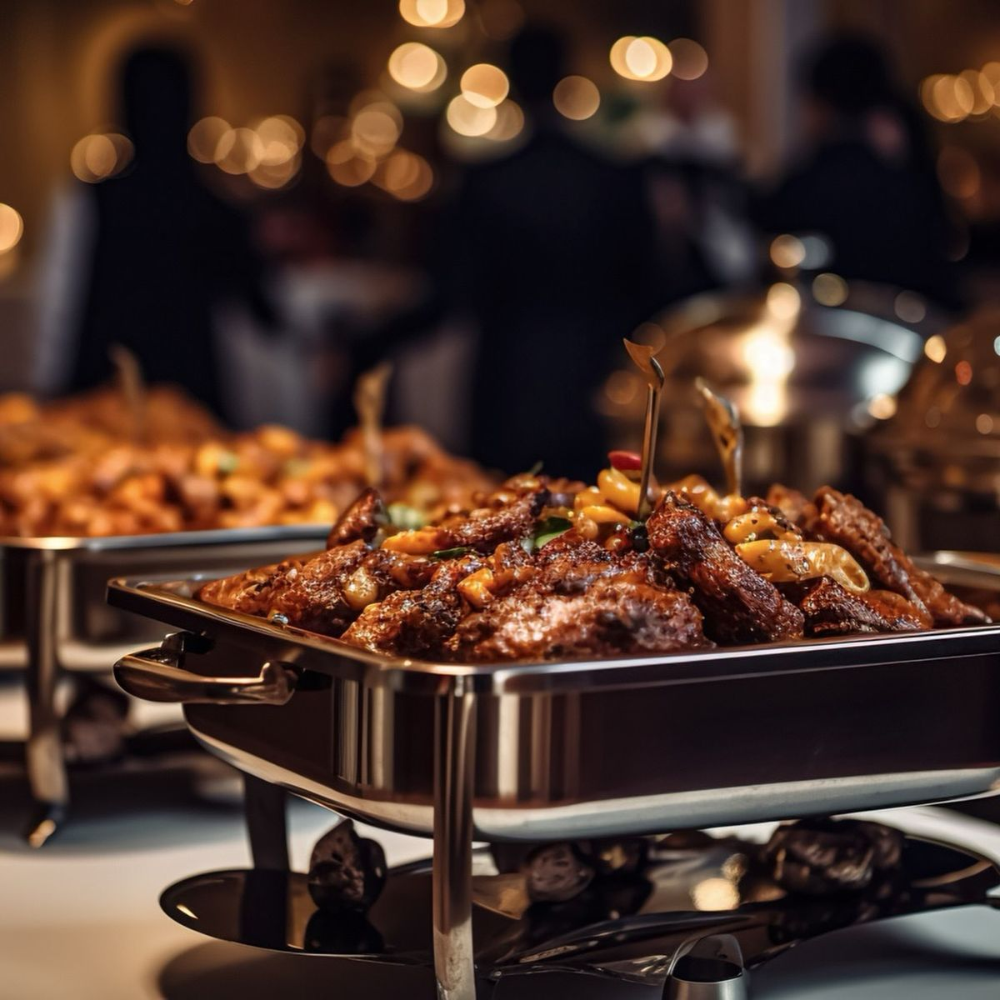
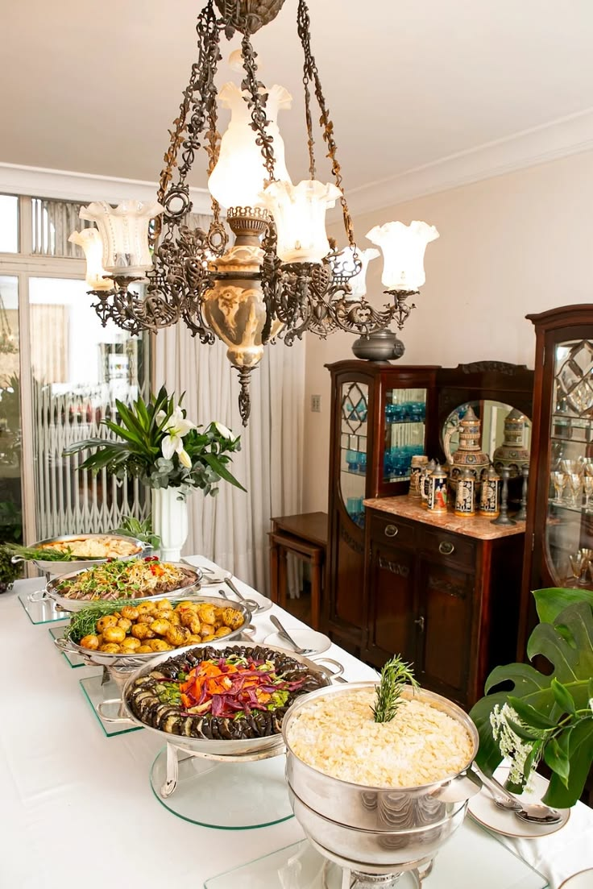
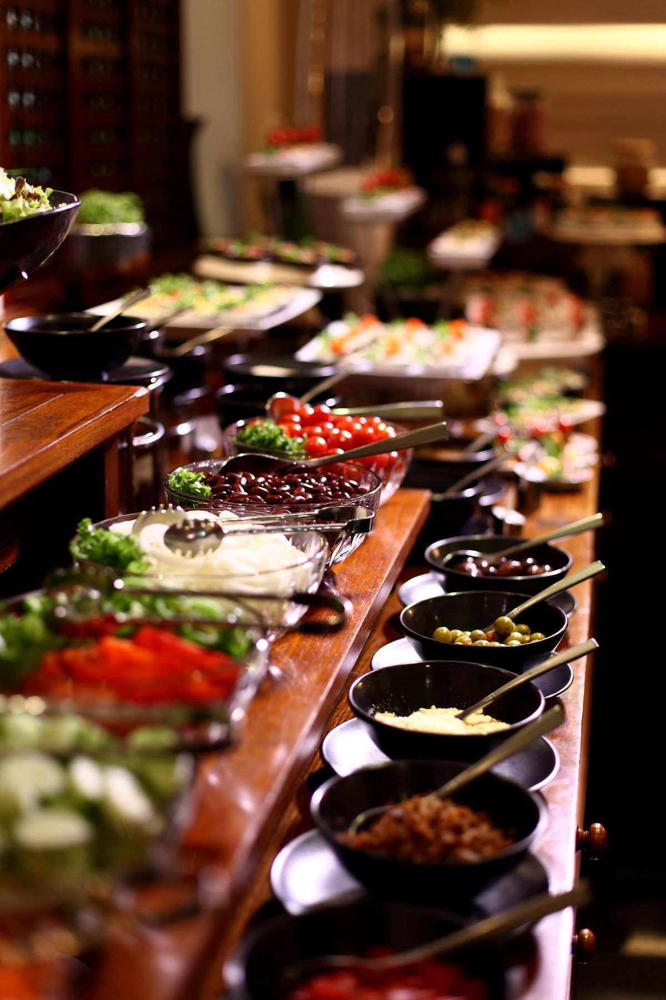
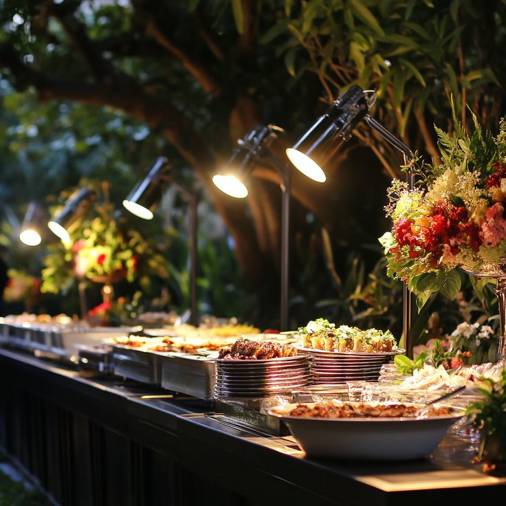

Arrival
A welcome drink and small bite that sets the mood before the first hello.
The atelier collection
A considered culinary world for hosts who want the food, flowers, service and room to speak one language.
Design your event

TVA personal point of view
We begin with the people at the table, then compose a one-off dining experience: colours, ingredients, course rhythm and service gestures that belong to your celebration alone.

The experience edit
A welcome drink and small bite that sets the mood before the first hello.
Conversation-led courses and live moments shaped around your guests.
Dessert, filter coffee and a close that lingers after the lights go down.
Interactive food moments
Our chefs finish, plate and serve in the room—an effortless spectacle that feels generous, never staged.




One promise
“The most luxurious service is the kind you barely notice—until you remember how good it made everyone feel.”Tamil Virundhu Atelier



Set the scene
Bring a colour, a memory, a song or a favourite dish. We turn the starting point into a cohesive table that feels recognisably yours.


Your private tasting
Meet the team, taste the menu and explore the details in a relaxed session created for your decision-makers.

Notes from the room
“The whole evening felt like us, just more beautiful and more relaxed than we imagined.”
— Aditi & Arjun, reception dinner“Every guest mentioned the food. Our parents felt looked after from start to finish.”
— Nandhini family, wedding lunch“The live stations had the energy of a celebration without ever feeling crowded.”
— Rhea, milestone birthday